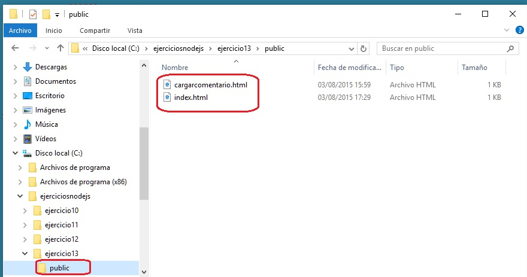
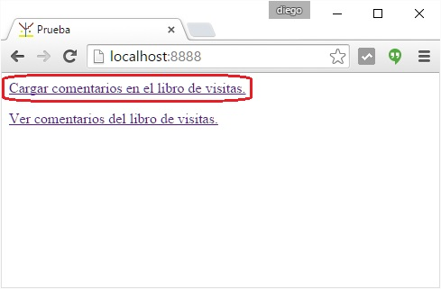
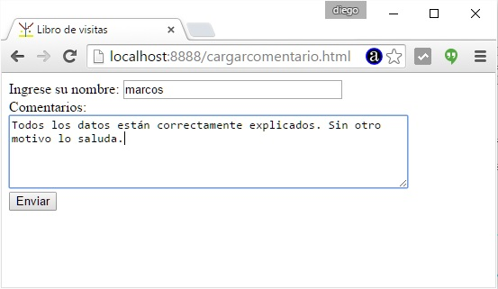
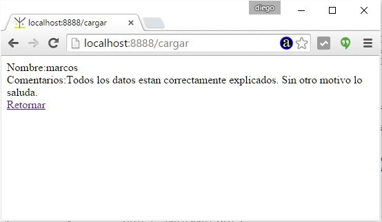
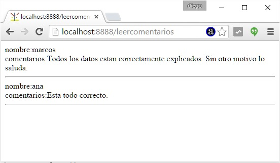

En el concepto anterior vimos como podemos capturar los datos de un formulario HTML para su procesamiento en el servidor.
Implementar un sitio web que permita mediante un formulario HTML ingresar el nombre y comentarios del visitante del sitio. Por otro lado imprimir todos los comentarios que dejan los visitantes del sitio. Almacenar los comentarios de los visitantes en un archivo de texto.
Crear una carpeta llamada ejercicio13 y en su interior crearemos el archivo ejercicio13.js (con el programa en Node.js propiamente dicho) y una carpeta llamada public. En la carpeta public crear dos archivos html con un menú y un formulario.

El contenido del archivo:
index.html
<!doctype html> <html> <head> <title>Prueba</title> </head> <body> <a href="cargarcomentario.html">Cargar comentarios en el libro de visitas.</a></p> <a href="leercomentarios">Ver comentarios del libro de visitas.</a></p> </body> </html>
En este primer archivo HTML podemos hacer notar que el segundo enlace tiene referencia a una URL que será capturada por nuestro programa en Node.js y procederemos a generar dinámicamente una página con el contenido del archivo de texto con todos los comentarios cargados hasta ese momento.
cargarcomentario.html
<!DOCTYPE html> <html> <head> <title>Libro de visitas</title> </head> <body> <form action="cargar" method="post"> Ingrese su nombre: <input type="text" name="nombre" size="30"><br> Comentarios:<br> <textarea name="comentarios" rows="5" cols="60"></textarea> <br> <input type="submit" value="Enviar"> </form> </body> </html>
Como vimos en el concepto anterior la propiedad action del formulario tiene el valor que capturaremos en nuestro programa en Node.js
Ahora pasaremos a codificar el archivo que contiene el programa en Node.js:
ejercicio13.js
var http=require('http');
var url=require('url');
var fs=require('fs');
var querystring = require('querystring');
var mime = {
'html' : 'text/html',
'css' : 'text/css',
'jpg' : 'image/jpg',
'ico' : 'image/x-icon',
'mp3' : 'audio/mpeg3',
'mp4' : 'video/mp4'
};
var servidor=http.createServer(function(pedido,respuesta){
var objetourl = url.parse(pedido.url);
var camino='public'+objetourl.pathname;
if (camino=='public/')
camino='public/index.html';
encaminar(pedido,respuesta,camino);
});
servidor.listen(8888);
function encaminar (pedido,respuesta,camino) {
switch (camino) {
case 'public/cargar': {
grabarComentarios(pedido,respuesta);
break;
}
case 'public/leercomentarios': {
leerComentarios(respuesta);
break;
}
default : {
fs.exists(camino,function(existe){
if (existe) {
fs.readFile(camino,function(error,contenido){
if (error) {
respuesta.writeHead(500, {'Content-Type': 'text/plain'});
respuesta.write('Error interno');
respuesta.end();
} else {
var vec = camino.split('.');
var extension=vec[vec.length-1];
var mimearchivo=mime[extension];
respuesta.writeHead(200, {'Content-Type': mimearchivo});
respuesta.write(contenido);
respuesta.end();
}
});
} else {
respuesta.writeHead(404, {'Content-Type': 'text/html'});
respuesta.write('<!doctype html><html><head></head><body>Recurso inexistente</body></html>');
respuesta.end();
}
});
}
}
}
function grabarComentarios(pedido,respuesta) {
var info = '';
pedido.on('data', function(datosparciales){
info += datosparciales;
});
pedido.on('end', function(){
var formulario = querystring.parse(info);
respuesta.writeHead(200, {'Content-Type': 'text/html'});
var pagina='<!doctype html><html><head></head><body>'+
'Nombre:'+formulario['nombre']+'<br>'+
'Comentarios:'+formulario['comentarios']+'<br>'+
'<a href="index.html">Retornar</a>'+
'</body></html>';
respuesta.end(pagina);
grabarEnArchivo(formulario);
});
}
function grabarEnArchivo(formulario) {
var datos='nombre:'+formulario['nombre']+'<br>'+
'comentarios:'+formulario['comentarios']+'<hr>';
fs.appendFile('public/visitas.txt',datos,function(error){
if (error)
console.log(error);
});
}
function leerComentarios(respuesta) {
fs.readFile('public/visitas.txt',function (error,datos) {
respuesta.writeHead(200, {'Content-Type': 'text/html'});
respuesta.write('<!doctype html><html><head></head><body>');
respuesta.write(datos);
respuesta.write('</body></html>');
respuesta.end();
});
}
console.log('Servidor web iniciado');
Todo la primera parte de nuestro programa es idéntica. Lo primero que cambia es cuando tenemos que enrutar los pedidos según la url:
function encaminar (pedido,respuesta,camino) {
switch (camino) {
case 'public/cargar': {
grabarComentarios(pedido,respuesta);
break;
}
case 'public/leercomentarios': {
leerComentarios(respuesta);
break;
}
default : {
// ser sirve la página estática.
}
}
}
Si presionamos el botón submit del formulario HTML procede a verificarse verdadero el primer case del switch. Llamamos al método grabarComentarios
La función grabarComentarios rescata primeramente todos los datos del formulario los parsea, los muestra en una página HTML (esto es todo lo visto en el concepto anterior) y procedemos a llamar a la función grabarEnArchivo:
function grabarComentarios(pedido,respuesta) {
var info = '';
pedido.on('data', function(datosparciales){
info += datosparciales;
});
pedido.on('end', function(){
var formulario = querystring.parse(info);
respuesta.writeHead(200, {'Content-Type': 'text/html'});
var pagina='<!doctype html><html><head></head><body>'+
'Nombre:'+formulario['nombre']+'<br>'+
'Comentarios:'+formulario['comentarios']+'<br>'+
'<a href="index.html">Retornar</a>'+
'</body></html>';
respuesta.end(pagina);
grabarEnArchivo(formulario);
});
}
La función grabarEnArchivo concatenamos los datos a grabar y llamamos al método appendFile que crea el archivo de texto 'visitas.txt' o lo abre para agregar en el caso que ya exista. El segundo parámetro recibe el string a grabar en el archivo de texto:
function grabarEnArchivo(formulario) {
var datos='nombre:'+formulario['nombre']+'<br>'+
'comentarios:'+formulario['comentarios']+'<hr>';
fs.appendFile('public/visitas.txt',datos,function(error){
if (error)
console.log(error);
});
}
Recordemos que primero debemos iniciar el servidor desde la consola del sistema operativo tipeando:
c:\ejerciciosnodejs\ejercicio13>node ejercicio13.js
Luego en el navegador seleccionamos la primer opción:

Cargamos algunos datos en el formulario HTML (recordemos que es un archivo HTML estático):

Finalmente cuando se suben los datos al servidor quedan registrados en el archivo de texto (que es lo nuevo que estamos viendo en este concepto) y se devuelve al navegador los datos ingresados:

Para la impresión de datos desde la página index.html tenemos el siguiente enlace:
<a href="leercomentarios">Ver comentarios del libro de visitas.</a></p>
Esto hace que en el case de la función encaminar procedemos a llamar a la función leerComentarios:
case 'public/leercomentarios': {
leerComentarios(respuesta);
break;
}
La función leerComentarios utiliza el objeto 'fs' para leer el archivo de texto y generar una página dinámica con dichos datos:
function leerComentarios(respuesta) {
fs.readFile('public/visitas.txt',function (error,datos) {
respuesta.writeHead(200, {'Content-Type': 'text/html'});
respuesta.write('<!doctype html><html><head></head><body>');
respuesta.write(datos);
respuesta.write('</body></html>');
respuesta.end();
});
}
El resultado en pantalla cuando pedimos dicho recurso desde el navegador es:

Este proyecto lo puede descargar en un zip con todos los archivos desde este enlace : ejercicio13